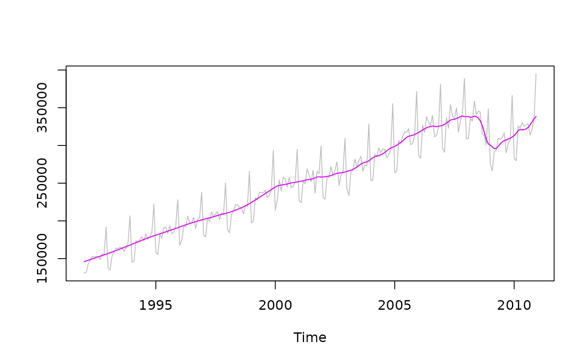

R/tdarima.R
ltdarima_decomposition.RdEstimation by means of the Kalman smoother of the canonical decomposition of linear time-dependent SARIMA models
ltdarima_decomposition(data, regular, seasonal, p0, p1, var1 = 1, se = FALSE)The series (a ts).
The orders of the regular part of the SARIMA models (p,d,q)
The orders of the seasonal part of the SARIMA models (bp,bd,bq). NULL is (0,0,0)
The arima parameters at the beginning of the series
The arima parameters at the end of the series
The (unscaled) variance of the innovations at the end of the series (1 at the beginning of the series)
Specifies if the standard deviations of the components are computed
A mts object is returned, with the trend, the seasonal, the irregular components and - if requested - their standard deviations
The arima parameters are organized in the following order: phi, bphi, theta, btheta
s<- rjd3toolkit::Retail$RetailSalesTotal
q<-rjd3sax::ltdarima_estimation(s, regular=c(0,1,1), seasonal=c(0,1,1),
fixed_var=FALSE, eps=1e-15, parametrization = "mean_delta")
sa<-rjd3sax::ltdarima_decomposition(s, c(0,1,1), c(0,1,1),
q$final$model$parima_0, q$final$model$parima_1, var1=q$final$model$parameters[5], se=TRUE)
ts.plot(ts.union(s, sa$components[,1], sa$components[,1]+sa$components_stdev[,1]), col=c('gray', 'blue', 'magenta'))
